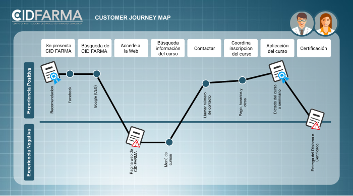

CID FARMA
Proyecto Marketplace/ Diseño web
Visión General
En el mundo hay muchas formas de vender en línea, el porcentaje de compradores online sigue creciendo y la gama de cosas que pueden comprar también lo hace. Como compradores no siempre somos conscientes de todo lo que debe pasar para que los productos que necesitamos estén en una repisa del supermercado o de una tienda. En el comercio minorista hay una serie de intermediarios que en ocasiones nos hacen perder la pista del ‘viaje’ de un producto; un viaje que va encareciendo el producto por cada empresa por la que debe pasar hasta que llega a las manos de nosotros, los consumidores. En esta realidad hay dos actores perjudicados: el consumidor, que acaba pagando más por un producto y el productor o fabricante, que se ve presionado a vender más barato para que su producto llegue al consumidor a un precio asequible y que todos puedan beneficiarse en el camino.
Nos han contactado de la Asociación Nacional de Pequeños Comerciantes, una asociación que agrupa a pequeñas y medianas empresas que comercializan productos y servicios, y nos piden que asesoremos a uno de sus miembros en crear un portal desde donde los clientes compren sus productos sin intermediarios.
Ver DemoDetalles del proyecto
Emprendimiento: CID FARMA
Servicio: Cursos y seminarios. Capacitación especializada. Consultoría y asesoría.
Partner: Karla Pando
Herramientas: Figma / Zeplin / Visual Studio / Loom
Entregables:
Diseño en alta para mobile en Zeplin
Maquetación de principales vistas en HMTL
Presentación del proyecto Video en Loom
Diseño del app en Figma
Objetivo del Proyecto
Nuestro Proceso
Investigación
A través del proceso logramos concluir en :
Antecedentes y Contexto
Obtuvimos la informacion mediante la entrevista con el cliente
Industria:Servicios educativos y empresariales
Rubro:Salud
Campos de intervención:Farmacología, Calidad de Atención en Salud
Usuarios/as identificados/as:Profesionales de Salud
Servicio más rentable:Capacitaciones in House
Servicio con mayor demanda:Cursos y seminarios
Servicio que desean implementar:Asesorías y cursos virtuales
Definición del producto
Obtuvimos la informacion mediante la entrevista con el cliente
¿Quiénes son los principales usuarios de producto?Profesionales de Salud que estén laborando en el sector público y que hayan tenido acceso a cursos de extención o cursos de formación en el último año.
¿Cuáles son los objetivos del negocio en relación con el producto?Brindar un canal de información y construir una plataforma que permita a las usuarias y usuarios conectar y adquirir de forma rápida y eficiente los servicios que se ofrecen.
¿Cuáles son los objetivos de estos usuarios en relación con el producto?Obtener información completa y específica de determinado servicio sin tener que moverse de su casa o centro de trabajo. Acceder a determinado servicio de forma rápida, segura y adecuada a sus necesidades, con la confianza de una Institución con experiencia y prestigio.
Contenidos priorizados a nivel usuario
Espacio para observar experiencias previas y recomendaciones de instituciones y otros usuarios y usuarias.
Convenios y/o Instituciones que certifican los servicios brindados.
Opciones de pago a elección de la usuaria o usuario para la adquisición de cursos individuales.
Formulario de pedido de los servicios: Consultoría, Asesoría y Capacitaciones "In House".
Información de contactos de la institución que incluyan: Dirección, representantes, números de teléfono.
Plantamiento- Prototipo
Conclusiones
Durante el proceso de investigación y síntesis logramos concluir lo siguiente:
User Persona
El resultado final del análisis realizado se tradujo en: Una pareja de esposos que constituyen nuestros User Persona principal y secundario.
User Persona Principal - Mario Casanova
Los usuarios y usuarias más rentables de CID FARMA son aquellos que adquieren el servicio de Capacitaciones "In House" o paquetes de cursos para un grupo grande de profesionales, y otros servicios de actualización y gestion para sus instituciones. El Dr. Mario Casanova representa el perfil de estos usuarios o usuarias, al ser una persona con capacidad de decisión para la contratación de servicios en beneficio de la institución que dirige o representa y la necesidad de mejorar los niveles de calidad de la misma.
User Persona Principal - María Juana Roche
CID FARMA tiene interés en ofrecer cursos de actualización de forma virtual para personas que tengan dificultad de hacerlo de forma presencial, ya sea por un factor de distancia o tiempo. María Juana Roche tiene el perfil de una persona a quien le gusta estar actualizada profesionalmente pero que, al encontrase laborando fuera de Lima, tiene dificultades para acceder a cursos de su interés porque usualmente se dan en la modalidad presencial. Por esta razón, la Químico Farmacéutica Roche, interesada en comprar cursos online, es nuestra segunda User Persona.

Customer Journey Map
En conclusión, tenemos actualmente tres puntos de contacto que debemos mejorar, la mayoría relacionados a la presentación de los servicios vía página web. Los momentos como las recomendaciones, la búsqueda en Google, el contactar y coordinar inscripción y la aplicación del curso logran dar al usuario una experiencia positiva. En este sentido, los puntos de contacto más resaltantes son "las recomendaciones" y "el dictado del curso y seminario", pues realmente cumplen con que el usuario o usuaria espera.
Problem Statements
Teniendo ya definidos a nuestros User Persona y teniendo los problemas identificados en la investigación, definimos 8 problem statements de los cuales 5 pertenecen a nuestro usuario principal y 3 a nuestra usuaria secundaria. Los principales problemas detectados tienen relación con la desconfianza y falta de información que les trasmiten las páginas web como las de CID FARMA. A continuación se detallan estos problemas señalando aquellos priorizados sobre los cuáles se trabajarán las soluciones:
- El Dr. Casanova necesita ver recomendaciones de usuarios que llevaron cursos en CID FARMA, para que tenga la seguridad de estar en una institución seria y confiable. (Priorizado)
- El Dr. Casanova no gusta del llenado de formularios de contacto porque le parece inseguro, innecesario y tedioso. (Priorizado)
- El Dr. Casanova requiere ver que instituciones certifican los servicios que ofrece CID FARMA, para estar seguro de la calidad y seriedad de la institución.
- El Dr. Casanova desconfía de las compras por internet por temor al phishing y que lo estafen. (Priorizado)
- El Dr. Casanova necesita conocer la plana docente y el temario del curso, para asegurarse de la calidad del curso y contratarlo. (Priorizado)
- La Químico Farmacéutica Roche necesita comprar cursos virtuales, porque reside en una provincia fuera de Lima.
- La Químico Farmacéutica Roche requiere que la información del curso se muestre de forma concisa y detallada, para ahorrar tiempo al contratar el curso. (Priorizado)
- La Químico Farmacéutica Roche necesita obtener su diploma de certificación de forma oportuna, para demostrar su constante actualización profesional ante su Institución.
¿Quieres saber más del proceso del proyecto?
- Puedes ver nuestro vídeo donde explicamos a detalle todo nuestro proceso e interactuamos con nuestro prototipo.
- También puedes ver ¡Nuestro Readme!
- Si quieres interactuar con el prototipo móvil, puedes ingresar a
¡Nuestro Demo!
Lo que aprendí
MarketPlace es mi primer proyecto relacionado a UX Designer, en cual aprendimos a cómo pasar de lo que un cliente quiere alcanzar a la definición de un producto digital en poco tiempo. También aprendimos a trabajar a través de Design Thinking y cómo involucrar a los usuarios y su feedback y cómo usar esos resultados sin perder de vista los objetivos iniciales.

{kind=link}